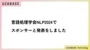

Uzabase for Engineers
https://tech.uzabase.com/
SPEEDA, NewsPicks, FORCASなどを開発するユーザベースのエンジニア採用サイト
フィード

ECS on Fargate 1.4.0で「ResourceInitializationError」を解決する方法 2
2
Uzabase for Engineers
こんにちは。ソーシャル経済メディア「NewsPicks」で検索システムを開発しております崔（ちぇ）です。 弊社の検索システムはAWS EC2（Elastic Compute Cloud、以下、EC2）で動いていました。それを昨年、Amazon ECS（Elastic Container Service、以下、ECS）に移行しました。前回のブログでは、移行のために調べた「アプリケーションをコンテナ化するベストプラクティス」をまとめましたので、ご興味ある方は読んでいただけると嬉しいです。 tech.uzabase.com 今日は、ECS on Fargateのタスク起動に手こずった話をしてみようと…
6時間前

try! Swift Tokyo 2024に参加してきました！ 1
Uzabase for Engineers
ソーシャル経済メディア「NewsPicks」でiOSエンジニアをしている金子です。 世界中のiOSエンジニアが集う国際カンファレンス try! Swift Tokyo 2024 に参加してきました！ tryswift.jp 弊社のNewsPicksアプリで採用しているTCA（The Composable Architecture）の作者であるPoint-Freeのお二人が来日されるということもあり、これは行かない理由がない！と社内で手を上げて、行かせていただきました。 本記事ではtry! Swift Tokyo 2024参加レポートをお届けします。 Kaigi Pass 一日中楽しめる Swi…
2日前

ソフトウェアエンジニアのライブラリアップデートの向き合い方 170
Uzabase for Engineers
こんにちは。ソーシャル経済メディア「NewsPicks」NewsPicks Stage.事業のエンジニアをしています、林です。 業務では Next.js / Rust / Go などを用いて、経済・ビジネス情報に特化した動画配信サービスであるNewsPicks Stage.の開発・運用を行っています。 はじめに 突然ですが、皆さんは自身のソフトウェアのライブラリアップデートは行えていますか？ 皆さんはどのようにライブラリアップデートを行なっていますか？ 新機能を試したくて？ npm iで失敗してから頑張る？ Renovate / dependabot が自動Mergeされる環境？ もしくは対応…
6日前

TCAの勉強会を開催しました！（資料・動画のリンク全部あります） 2
Uzabase for Engineers
ソーシャル経済メディア「NewsPicks」でiOSエンジニアをしている金子です。 先日、弊社ユーザベース主催でTCA（The Composable Architecture）の勉強会を開催しました。 本記事では勉強会の開催レポートをお届けいたします！ uzabase-tech.connpass.com 総勢約140名の参加者 入門から最新バージョン情報、開発ノウハウまで！バラエティに富んだ10名の登壇者によるLT TCA入門したてなので、自分が馴染みのある実装と比較しながらキャッチアップしてみる（fumiyasacさん） TCA魔法学入門（dazyさん） 個人開発をTCAで運用していくとい…
7日前
Clojureで巨大なZIPファイル/CSVファイルを処理した話 1
Uzabase for Engineers
SaaS Product Team(以下Product Team)のあやぴーです。 Product Teamの開発しているプロダクトでは「企業に関する大量データ」というものを扱う機会があります。特に様々な形式でデータパートナーから受領するため、一筋縄でいかないことが多々あります。今回はその中でも巨大なZIPファイルの中に大量のCSV(ライクな)ファイルをClojureでいい感じに処理するために苦戦した話を書いていこうと思います。 前提 最初のアプローチ OutOfMemoryErrorとの闘い 実行時間との闘い CSVの読み込み リフレクションの抑制 まとめ 前提 まずはZIPファイルについて…
10日前

言語処理学会NLP2024でスポンサーと発表をしました
Uzabase for Engineers
UB Researchの高山です。 今月神戸で開催された言語処理学会NLP2024に株式会社ユーザベースとして参加してきました。 個人としては2018年から言語処理学会の年次大会にはほとんど参加していましたが、近年はオンライン参加も多かったです。今年はユーザベースとして初めてスポンサーをしてブースを出すことができたことを嬉しく思います。 また、弊社の田村が発表とポスターセッションをおこないました。 ポスターのプロポーザルはこちらで公開されています。以前から取り組んでいる、LUKEを使ったニュースに対する企業名の紐付けの精度改善の取り組みについてです。 発表内容はこちらで公開されています。こちら…
10日前
2000行台の巨大なReactコンポーネントをリファクタリングして学んだこと【ペアレビュー】 1
Uzabase for Engineers
はじめに こんにちは！株式会社アルファドライブの佐藤です。 この度、タイトルにもあるように2000行台（最大2415行）の巨大なReactコンポーネントをいくつかリファクタリングしました。この作業には大量の変更が生まれます。2月の私のmainブランチへのコミットは11905 (+5683, -6222)行でした。結論、ペアレビューの時間を設けることで約1ヶ月でこの膨大な変更をやり切ることができたので、今回はそこに至るまでの試行錯誤を記録したいと思います。 背景 私たちが扱うプロダクトには、2000行を超えるようなReact クラスコンポーネントがいくつか存在していました。このような巨大なコンポ…
12日前

SSRFの脆弱性について セキュアコーディングの啓蒙 第3回
Uzabase for Engineers
はじめに SSRF の脆弱性とは？ なぜ SSRF の脆弱性？ ある日、実際に SSRF の脆弱性を埋め込んでしまった、開発現場の話（空想） SSRF の脆弱性の対策 実装ミスによる脆弱性対策 ユーザーの入力を信用しない 許可リスト・拒否リストの利用 ライブラリの脆弱性を回避する ライブラリの脆弱性をチェックする ライブラリを使う際には、極力標準ライブラリを使用する まとめ We are hiring!!! 参考文献 はじめに こんにちは！ 株式会社ユーザベース BtoB SaaS Product Team（以下 Product Team）の山田・度會です。 ユーザベースの Product T…
20日前
Meet UB Tech #46「【Startup CTO of the year 2023】ピッチで触れられなかった、ALGO ARTISの魅力を深ぼるぞ！」を公開しました
Uzabase for Engineers
こんにちは、Uzabaseの松並です。 ユーザベースのエンジニアカルチャーをゆるっとお伝えするPodcast、Meet UB Tech。 #46のテーマは、「【Startup CTO of the year 2023】ピッチで触れられなかった、ALGO ARTISの魅力を深ぼるぞ！」です。 2023年11月22日に東京虎ノ門で開催された「Startup CTO of the year 2023 powered by AWS」において、見事！Startup CTO of the year の栄冠に輝いた、株式会社ALGO ARTIS 取締役 VPoEの武藤 悠輔さんをゲストに迎えて、根掘り葉掘り…
22日前
New RelicのルックアップテーブルとNRQLを駆使して使われていないAPIを探し出す
Uzabase for Engineers
ソーシャル経済メディア「NewsPicks」のSREをしている飯野です。 サービスの開発は試行錯誤の連続です。サービスの成長とともに機能はどんどん増えていきます。追加される機能はサービスに不可欠な重要な機能だけではなく、サービスの方向性や前提が変わり不要になってしまったり、思ったように価値が提供できずに使われない機能もたくさん登場します。 このような機能が登場してしまうことは仕方のないことですが、ずっとメンテナンスしていくコストは払えません。定期的にお掃除したいものです。 というわけで、使われなくなってしまった機能（APIサーバーのREST API）をNew Relicを使って探し出してみまし…
1ヶ月前
TCA1.7（Observable Architecture）へのマイグレーションで得た知見を共有します
Uzabase for Engineers
ソーシャル経済メディア「NewsPicks」でiOSエンジニアをしている金子です。 WWDC23でObservationフレームワークが発表されてからすぐ、XのPoint-Freeアカウントより以下の投稿がありました。 「ViewStoreが消えるだと...！？めちゃシンプルになるじゃないか...！」とワクワクしたのを覚えています。 Apple engineers have done something incredible at this year’s WWDC.Thanks to @Observable, macros and more, you can write Composable…
1ヶ月前
インセプションデッキに取り組んだ話
Uzabase for Engineers
はじめに インセプションデッキとは 10個の質問 実際にチームで行ったこと まとめ はじめに 株式会社ユーザベース BtoB Saas Product Team の 阿久津です。 前提として、私の所属しているチームは「アジャイルの知見の少ないメンバーのみを集めて１から新しいチームを作る」という試みを行っているチームです。 私も、昨年の４月にNew JoinerとしてJoinしたアジャイルの知見の少ないメンバーの一人です。 約１年ほどこのチームで働いてきて色々とアジャイルのプラクティスに関しては経験をしてきましたが、 その中でもインセプションデッキを今回はじめてチームで取り組んでみたので取り上げ…
1ヶ月前
チームを深く理解するエンパシーサークルという取り組み
Uzabase for Engineers
はじめに こんにちは！ Uzabase の Saas Product Teamに所属しているWatanabe Jinと申します。 Uzabaseではチームが3ヶ月に一度変わるチームシャッフルという文化があり、チームメンバーが定期的に変わるような仕組みがあります。 そんな頻繁に変わるチームで、チームメンバー同士の相互理解などを助けてくれるのが今回紹介する「エンパシーサークル」という取り組みです。 エンパシーサークルとは エンパシーサークル(別名: 共感サークル)とは、集まった人たちの中で一人が「自分のエピソードを話す話手」となり、それ以外の人全員が「話しての感情やその奥にある大切にしたいこと(ニ…
1ヶ月前
Biome.jsでシンプルなフロントエンドへ
Uzabase for Engineers
こんにちは！経済情報プラットフォームSPPEDA の開発をしている山本です。 本稿ではBiome.jsをプロダクトに導入してみたので事例の紹介をしていきます。 はじめに 私が所属しているチームで新たにマイクロフロントエンドで機能開発をしていくにあたりWeb componentsを作る流れになりました。今回はそのWeb componentsに以前からちょっぴり興味のあったBiome.jsを導入してみました。 導入背景は、ツールのシンプルさに魅力を感じたからです。フロント開発をする上でESLintやPrettierなどのツールを導入しているプロジェクトは多いと思います。ただ設定ファイルが複数存在し…
1ヶ月前
DOMイベントの発火順序を調べ初めたら行き着く記事 feat.相談の精神
Uzabase for Engineers
こんにちは！ Uzabase の SaaS Product Team に所属している樽本と申します。普段は SPEEDA の開発をしています。 今日は「DOM のイベントが発火(ハンドリング)する順序を考慮した実装はやめたほうが良い。」という個人的な教訓と、それを得るに至ったストーリーの紹介をします。タイトルは願望です。 ※開発時のブラウザは Chrome でしたので、その他のブラウザでの検証は行っていません ある日のこと フロントエンドアプリケーションをカキカキワチャワチャしていたある日、以下のようなコード(諸々省略)で問題は発生しました。 .... <input type="text" o…
1ヶ月前
エンジニアが今日から始める英語学習の継続方法
Uzabase for Engineers
1. はじめに こんにちは。ソーシャル経済メディア「NewsPicks」でエンジニアをしております小林です！ 皆さんは英語学習に取り組んでいらっしゃいますか？エンジニアとして技術ドキュメントや国際カンファレンスの動画等で英語に触れる機会があると思います。また、技術的なスキルはあるが、英語を話すことが苦手な場合、将来的に市場でどう評価されているかの動向も気になるところです。 最新の2023年度の報告によると、世界的にITエンジニアの給与が上昇している一方、日本では前年比USドルベースで5.9%減少、現地通貨（円）ベースでもわずか0.4%増加に留まっています。残念ながら、世界と比較した時に日本の給…
2ヶ月前
2024年のPythonプログラミング
Uzabase for Engineers
ソーシャル経済メディア「NewsPicks」で推薦や検索などのアルゴリズム開発をしている北内です。Pythonは頻繁に新機能や便利なライブラリが登場し、ベストプラクティスの変化が激しい言語です。そこで、2024年2月時点で利用頻度の高そうな新機能、ライブラリ、ツールなどを紹介したいと思います。 この記事では広く浅く紹介することに重点を置き、各トピックについては概要のみを紹介します。詳細な使用方法に関しては各公式サイト等での確認をおすすめします。なお、本記事ではOSとしてmacOSを前提としています。 環境構築 Pythonの環境構築はpyenvとPoetryの組み合わせがもっとも標準的でしょう…
2ヶ月前
Meet UB Tech #45「Meet UB Tech 新年会 その2！2023年のUzabase SaaS 事業 Tech もふり返ってみた」を公開しました
Uzabase for Engineers
こんにちは、Uzabaseの松並です。 ユーザベースのエンジニアカルチャーをゆるっとお伝えするPodcast、Meet UB Tech。 #45のテーマは、「Meet UB Tech 新年会 その2！2023年のUzabase SaaS 事業 Tech もふり返ってみた」です。 2023年末までユーザベース SaaS事業のテックブランディングを担当していた現・NewsPicks Stage.エンジニアの朴さん、SaaS事業エンジニアの福田さんをゲストに迎え、共同パーソナリティのNewsPicks Fellow高山さんとともに新年会収録②を行いました！ open.spotify.com #45の…
2ヶ月前
Meet UB Tech #44「Meet UB Tech 新年会 その1！2023年のNewsPicks Techをふり返ってみた」を公開しました
Uzabase for Engineers
こんにちは、Uzabaseの松並です。 ユーザベースのエンジニアカルチャーをゆるっとお伝えするPodcast、Meet UB Tech。 #44のテーマは、「Meet UB Tech 新年会 その1！2023年のNewsPicks Techをふり返ってみた」です。 NewsPicks Fellowの高山さん、NewsPicks エンジニア兼テックブランディング担当の池川さん、NewsPicks QAエンジニアの西薗さんをゲストに迎えて、新年会収録を行いました！ open.spotify.com #44の聞きどころはこちら。 タイトル： 「Meet UB Tech 新年会 その1！2023年のN…
2ヶ月前
NewsPicksとSaaS Product Team合同でクリスマスLT大会を開催しました！
Uzabase for Engineers
こんにちは。ソーシャル経済メディア「NewsPicks」Media Infrastructure Unitの韓です。 年末にNewsPicksとSaaS Product Team合同で『ユーザベースの技術文化大公開！Engineer Meetup 〜クリスマスLT祭り！〜』というイベントを開催しました。 今回はそのイベントレポートについて書いていきます。 イベントについて タイムテーブル 当日の様子 ▼1人目：NewsPicksプロダクトチームの西さん ▼2人目：NewsPicksプロダクトチームの三村さん ▼3人目：SaaSプロダクトチームの朴さん ▼4人目：NewsPicksプロダクトチー…
2ヶ月前
ふりかえりからチームづくりの9ヶ月をふりかえる
Uzabase for Engineers
こんにちは。 BtoB SaaS Product Teamの中嶋です。 Product Teamでは1週間のイテレーションごとにチームでふりかえりをしています。 コロナ禍に入る前は物理のホワイトボードでやることが多かったと聞いていますが、最近は大体figjamボードを使っています。 オンラインのホワイトボードはスペースを自由に使えたり、付箋以外にも画像とかスタンプを押せたりと楽しいですが、油断せずに片付けないでおくと過去のふりかえりの残骸がどんどん残っていきます。 年明けになったのもあり、それらを片付けようと思ったときに、ふと「過去のふりかえりをふりかえってみるのも良さそうだな」と思いました。…
3ヶ月前
Meet UB Tech #43「テラドローン塩澤さんに聞く、ドローンの社会実装と開発の実態」を公開しました
Uzabase for Engineers
こんにちは、Uzabaseの松並です。 ユーザベースのエンジニアカルチャーをゆるっとお伝えするPodcast、Meet UB Tech。 #43のテーマは、「テラドローン塩澤さんに聞く、ドローンの社会実装と開発の実態」です。 ドローンの利活用を通じた社会課題の解決を目的に多領域で事業展開する、テラドローン株式会社 開発本部 執行役員の塩澤駿一さんに詳しいお話を聞いてみました。 open.spotify.com #43の聞きどころはこちら。 タイトル： 「テラドローン塩澤さんに聞く、ドローンの社会実装と開発の実態」 出演者： 塩澤駿一 氏 @shun1shiozawa（テラドローン株式会社 開発…
3ヶ月前
新規プロダクト開発で API の統合テスト文化が根付いているっていう話（Golang）
Uzabase for Engineers
はじめに 新規プロダクトにおける API テストの重要性を理解してもらう 誰でも容易に信頼性の高いテストが書ける基盤づくり カバレッジ情報の見える化でテストを書くモチベアップ API テストの継続的なリファクタで負債と戦う チームメンバーとのコミュニケーションと協力 おわりに はじめに はじめまして！株式会社アルファドライブにてバックエンド開発をやっています コタ @sirogami_main です。 この記事は AlphaDrive Advent Calendar 2023 の最終日の記事です！ qiita.com 現在開発中の新規プロダクトではバックエンドのほぼすべての API に複数のテ…
3ヶ月前
【デスクツアー】リモートワーク主体なAlphaDriveテックチームのデスク周り紹介
Uzabase for Engineers
この記事は AlphaDrive Advent Calendar 2023 の24日目の記事です。 こんにちは、株式会社アルファドライブの佐藤です。今回は、AlphaDriveのエンジニア・デザイナーのデスク周りを紹介します！ 弊社は出社義務のないリモートをベースとした働き方となっているため、デスク周りにもそれぞれの働き方や個性が反映されているはずです。メンバーから募集したデスク周りの画像と紹介コメントに対して筆者が一言コメントする形でお届けしますので、お楽しみください！ おしゃれ編 R.I 友人と一緒に作ったデスクです。2台作ってコーナー型に配置。仕事してると何かとモノを広げるタイプなので置…
3ヶ月前
ジュニアエンジニアを脱却するための「コンテナ流儀」
Uzabase for Engineers
こんにちは。ソーシャル経済メディア「NewsPicks」で検索システムを開発しております崔（ちぇ）です。 この記事は、 NewsPicks Advent Calendar 2023 の23日目の記事になります。 qiita.com 昨日ははぐっさんによる「SwiftUIのKeyframeAnimatorでちょっとしたカードアニメーション 〜猫の手を添えて〜」でした！ はじめに コンテナ流儀: 必要最低限のものだけで運用する Point１）レイヤーは少ないほどいい TIP：ベースイメージを作る Point２）不要なパッケージをインストールしない Point３）いつ再起動してもいいコンテナを作る …
3ヶ月前
立ち上げ期にこそ取り入れる！ 組織を強固にする「全員SRE」という文化
Uzabase for Engineers
AlphaDrive Advent Calendar 2023 12/23 公開分の記事です。
3ヶ月前
EC2とcronで動いていたバッチ基盤をマネージド化した
Uzabase for Engineers
概要 ソーシャル経済メディア「NewsPicks」SREチームの中川です。 皆さんはバッチ処理基盤はどうされていますでしょうか。 NewsPicks では少し前まではそれらをEC2、cronの組み合わせで動作させていました。 何年も前からこの仕組みだったのですがSREとしてはEC2の面倒見るのも手間ですし、それ以上にcronを変更する際のオペレーションミスが目立ったのが懸念点でした。 その為、まずはAWSマネージド化するための基盤を整備し、その後バッチアプリを載せ替えていくようにしました。 対応前の基盤構成 同じSREチームの安藤さんが CloudNative Days Tokyo 2023 …
3ヶ月前
NewsPicksアプリのGoogle Playでの評価が1年で爆上がりした話
Uzabase for Engineers
この記事は NewsPicks アドベントカレンダー 2023の21日目の記事です。 qiita.com こんにちは、Androidネタばかりで肩書きと合わなくなってきてるので、iOSも頑張りたいと思い始めているNewsPicksのVP of Mobile Engineerの石井です。 1年間、様々な改善をしてきましたが、書いてなかったけど実はすごくいい結果がでているものがあるので、それについてです。 概要 2022年11月下旬にアプリの起動時間を改善したことは、以前のブログで書きました。 tech.uzabase.com それ以前では、「アプリが重い。起動が遅く、画面がフリーズしたかと錯覚を…
3ヶ月前
NewsPicks：Brazeでメール配信が改善できた話
Uzabase for Engineers
はじめに こんにちは、ソーシャル経済メディア「NewsPicks」の桐畑です。 この記事は NewsPicks アドベントカレンダー 2023 の18日目の記事です。 昨日は呉さんの『iOSのE2Eテストを並列で動かし、リリースサイクルを高速化した話』でした！ 今日は、Brazeでメール配信が改善ができた話をお送りできればと思います。 NewsPicksでは、登録いただいているユーザーの皆様に、新着&おすすめ記事や各種お知らせのメールを送付させていただいております。 一昨年ぐらいに、Brazeというカスタマーエンゲージメントサービスを導入しました。導入当初、プッシュ通知やアプリ内ダイアログとい…
3ヶ月前
HPAの閾値設定を1000%にして思い込みをクリアにする
Uzabase for Engineers
こんにちは。株式会社ユーザベース SaaS事業 酒井です。 「HPAの閾値設定は100%以上あんねん」。思い込みで閾値は100%が上限と勘違いしそうになるねという記事になります。 先日とあるシステムのIstioリソースを眺めていた所、Istio Ingress GatewaysのPodが頻繁に増減しているのに気が付きました。 istioctlとIstioOperator定義で管理されていたので確認すると、以下のようなデフォルト値が使われていました。 ingressGateways: - name: istio-ingressgateway enabled: true k8s: resource…
3ヶ月前